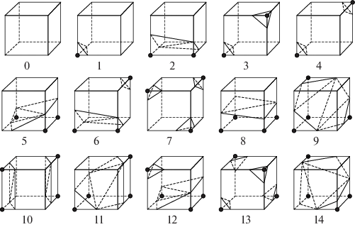
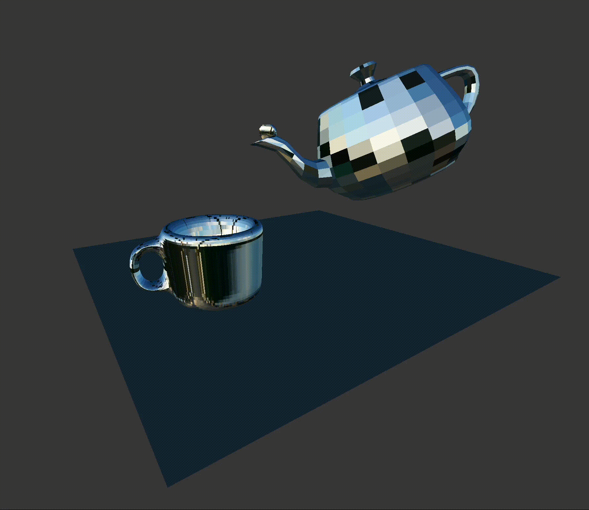
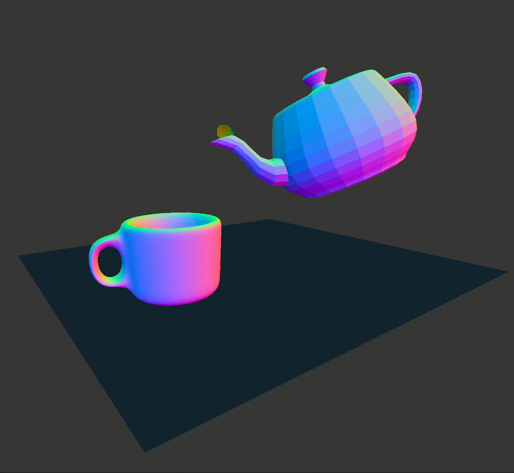
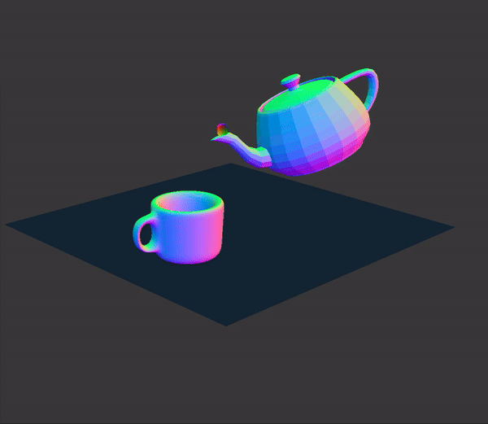
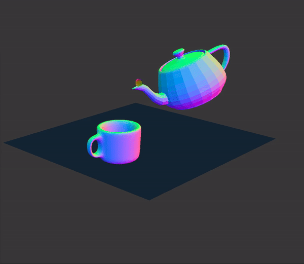
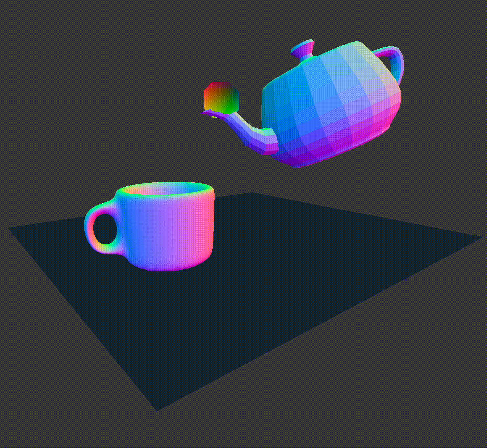
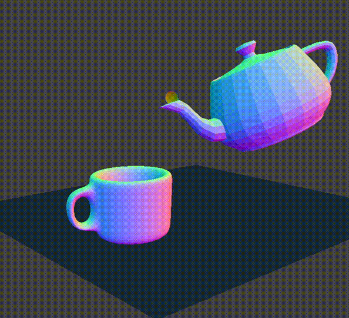
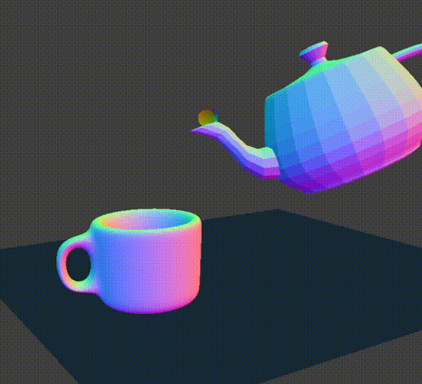
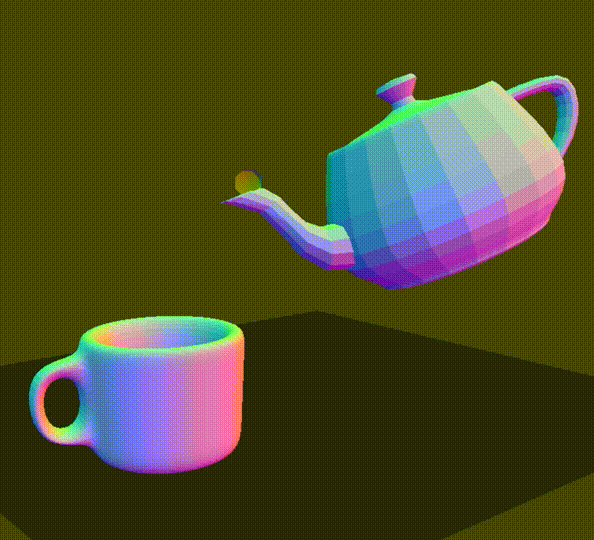
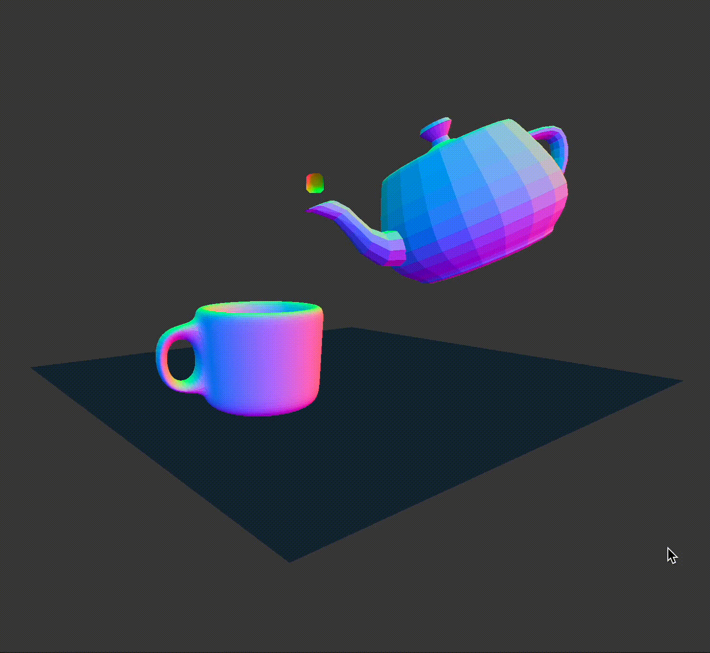

Our 3D simulation of teapot pouring tea into a teacup. Teaset with Phong shading, tea with mirror shading, and plane with marble texture mapping |
Fluid simulation has been a widely researched field in computer graphics for decades. For our project, we create a fluid simulation involving complex geometries in a scene with a teapot pouring tea into a teacup. The tea is represented by a moving stream of liquid, and to create our scene, we support collisions with complex objects built from triangle meshes. We first implemented fluid dynamics using a particle-based approach controlled by a 3D smoothed particle hydrodynamics (SPH) solver. Then, we reconstructed the surface of the fluid using the Marching Cubes algorithm. To have the liquid interact with the teaset, we check for triangle-particle collisions, affecting the movement and position of the fluid. Our implementation of surface collisions allows us to generalize beyond planes to any arbitrarily complex polygon mesh—from teapots to tugboats.
Fluid Simulation
Building off of our cloth simulator, we set up a particle-based fluid simulator. Because cloth is simulated by a system of point masses and springs, by removing the springs, and rendering a sphere for each point mass, we adapt the system to model liquid. Each particle has the properties mass, pressure, density, position, forces, and velocity. We implemented a 3D smoothed particle hydrodynamics (SPH) solver to calculate the positions of the point masses as a result of the accelerations due to density, pressure, and the external forces (gravity) acting on it. At a high level, our simulation is governed by the following physical equations referenced in Penn State EGEE 520:
$$\frac{dv_i}{dt} = a_i^{pressure} + a_i^{viscosity} + a_i^{gravity}$$ $$a_i^{pressure} = \langle -\frac{1}{\text{density}}\nabla \text{pressure}\rangle_i$$ $$a_i^{viscosity} = \langle -\frac{\text{viscosity}}{\text{density}}\nabla \nabla \text{velocity}\rangle_i$$ $$a_i^{gravity}\approx [0\ 0\ -g]^{T}$$These equations are known as the Navier-Stokes equations, which model the motion of viscous fluids. Since these equations are continuous (and therefore unable to be computed with 100% accuracy), we approximate them using summations - more specifically, given particle $p_i$, we iterate over $p_i$'s neighbors, (calculated using the algorithm outlined below), weighting each neighbor $p_j$ according to a kernel function $K(r)$. This kernel assigns higher values to neighbors that are closer spatially to $p_i$, and vice versa. Summing all neighboring contributions with respect to pressure and viscosity (pressure relying on the gradient $\nabla K(r)$, and viscosity relying on the second derivative $\frac{d^2}{dr^2}K(r)$) gives us $p_i$'s respective accelerations. Finally, with this particle's acceleration and mass, we can calculate the forces acting on $p_i$ for a single timestep $\Delta t$.
In order to create a arc-like stream of fluid originating from the teapot spout and ending at the teacup, we initialize each particle with a starting velocity. It took many trials and errors to fine tune the $x$, $y$, and $z$ components of our starting velocity to achieve the perfect movement. To simulate a continuous stream, we repeatedly spawn batches of particles at the spout every ~100 time steps.
STL Renderer
Using Blender, we modeled a teacup and imported Blender's premade teapot mesh to create our scene. We positioned the teacup and teapot next to each other with the teapot slightly raised above it and rotated, as if it were pouring tea into the cup. We exported this as an STL file which stores the values of the points and normals of the triangles in the triangle mesh. Given this information, we built an STL renderer to render the teaset model.
Collisions
Having loaded the STL file, we store the triangles as a bounding volume hierarchy (BVH) tree to check for intersections between the particles and triangles efficiently. Thus, in addition to spheres, planes, and boxes, we support collisions with the triangle meshes that make up the teacup and teapot.
Optimizations
To iterate over each particle's neighbors for the SPH solver, testing proximity for each particle was computationally infeasible. Thus, the acceleration structure we chose to tackle this problem was a grid-based hash map, modeled after Fast and Efficient Nearest Neighbor Search for Particle Simulations. When computing the effect of nearby particles on density, pressure, and acceleration, we only consider particles in the same grid cell—approximating the kernel defined for SPH.
Similarly, our BVH tree optimizes our system to handle collisions by only checking for particle-triangle collisions in a bounding box, based on the position of the particle. Because we recursively check for collisions with a bounding box, the tree structure limits the depth of recursion.
Unlike light rays, which can intersect both the left & right bounding boxes, a single point mass can only occupy at most one of the two at any given time. This allows us to short circuit our traversal sooner and optimize the runtime of intersection tests.
We also utilized OpenMP to parallelize certain tasks. To do this, we #pragma omp parallel for directive above each iterative loop, with an additional keyword of collapse(n) for n-level nested loops (for example, n=3 with marching cubes algorithms).
Surface Reconstruction
To accomplish surface reconstruction, we used the Marching Cubes algorithm. At a high level, we takes the following steps:
- Initialize a grid of vertices across our world space (representing the vertices of our Marching Cubes)
- For each point mass, identify the 8 nearest vertices and add itself to their lists of neighbors
- Compute the density at each vertex
- Compute the *activation* at each vertex (1 if $\rho>\rho_{\text{rest}}$, 0 otherwise)
- For each cube, use the cube’s 8 vertex *activations* to access the corresponding triangulated cube from a table of all 256 triangulated cubes
- Render the triangles of each selected triangulated cube onto the scene
|

Triangulated Cubes |
Texture Mapping
In general, for rendering, an object uses the most recently-bound shader. Specifically, for HW4's "Texture" shader and plane collision object, after applying the texture to the cloth (whose $uv$ coordinates were calculated correctly), it is implicitly applied to the plane. Since, by default, the plane doesn't set any $uv$ attribute, the texture is incorrectly mapped. By modifying plane.cpp such that the bounds of the image span the plane, the texture is correctly mapped. For our purposes, this results in a glossy marble table surface for our teaset to rest on!
|

scene with mirror shading |

scene with normal shading |
Particle Counts
As the number of particles spawned per 100 timesteps increases, the fluid becomes thicker and renders more slowly. It also eventually reaches the bounding box and stops being rendered.
|

num_particles = 10 |
num_particles = 100 |

num_particles = 200 |
Marching Cube Counts
At a low number of marching cubes, the liquid appears more like slime or a cloud. The liquid is much rounder, smoother and larger.
At a high number of marching cubes, the liquid appears thinner. We see drops of liquid starting to separate from each other, rather than one continuous surface.
|

1,000 Cubes |
 125,000 Cubes |
 1,000,000 Cubes |
Spawn Frequency
The spawn frequency is the rate at which the particles are spawned out of the teapot. This is parameterized in the code as $N$. The images below show the effect of different values of $N$. In general, a lower $N$ leads to the particles sticking together and falling directly out of the teapot. Conversely, a higher value of $N$ leads to the particles overshooting the teapot. The value of $N=100$ was chosen to be nominal as it resulted in the most accurate fluid trajectory in air.
|

N=10 |

N=100 |

N=1000 |
Velocity
We observe that altering the initial velocity has a demonstrable effect on the trajectory of the liquid. As the y component of the initial velocity increases, the liquid sprays up and overshoots the teacup.
 Initial Velocity: x =-0.13, y = 2, z= 0.7 |

Initial Velocity: x = -2, y = 3, z = 0.7 |
Braley, C., & Sandu, A. (2010). Fluid simulation for computer graphics: A tutorial in grid based and particle based methods. Virginia Tech, Blacksburg.
Homework 4: Cloth Sim. CS184/284A: Homework 4: Cloth Sim. (n.d.). https://cs184.eecs.berkeley.edu/sp24/docs/hw4
Gross, J., Köster, M., & Krüger, A. (2019). Fast and Efficient Nearest Neighbor Search for Particle Simulations. In CGVC (pp. 55-63).
Lorensen, W. E., & Cline, H. E. (1998). Marching cubes: A high resolution 3D surface construction algorithm. InSeminal graphics: pioneering efforts that shaped the field(pp. 347-353).
Nasreldeen, A., Fan, L., & Liu, K. (2017). Smooth Particle Hydrodynamics (SPH) Group Presentation EGEE 520 Course Spring 2017. Penn State University College of Earth and Mineral Science Department of Energy and Mineral Engineering.
Rogue_Knight3D. (2021, January 23). How to make a cup in Blender || Blender Tutorial for beginners || Quick and Easy Cups. YouTube. https://youtu.be/4yHRhgwSTHE?si=qJJRFumlMKk_RVAX
It was wonderful to work together as a team, and we all played an integral role in the implementation of our project and contributed equally to the proposal, milestone, and final writeups and presentations.
Elana modeled the teaset in Blender, worked on rendering the particles and triangle meshes in the Marching Cubes algorithm, contributed to the implementation of particle-surface intersections, researched algorithms and approaches for fluid simulation and surface reconstruction, and built the website that displays our work.
Nikhil developed an STL renderer to display STL files exported from Blender. Originally he also developed a skeleton for a wholly custom (i.e. from OpenGL native calls) rendering pipeline - though this was later adapted into a different structure. In addition, he worked on OpenMP implementation to parallelize Marching Cubes subtasks.
Austin implemented the acceleration structure for computing nearest neighbors of particles. He implemented the BVH construction, traversal, and particle-surface intersection for teapot collisions. He also researched options for surface reconstruction and contributed to the implementation of Marching Cubes.
Josiah implemented the SPH solver for calculating the various properties of particles, as well as created a custom shader to visualize the pressure of these particles. He also contributed to the implementation of Marching Cubes.